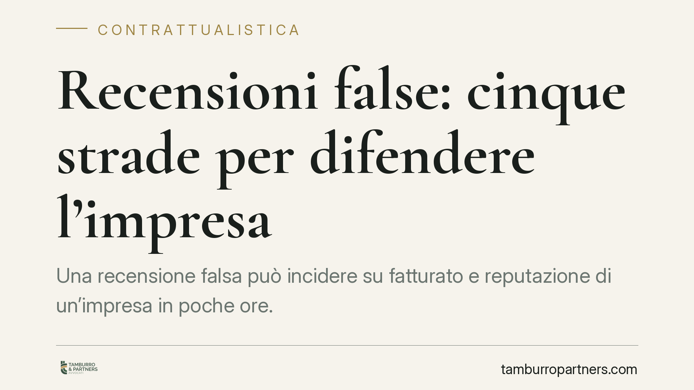

Recensioni false: cinque strade per difendere l'impresa
Una recensione falsa può incidere su fatturato e reputazione di un'impresa in poche ore. L'ordinamento offre più strumenti di tutela, cumulabili tra loro: dalla segnalazione alla piattaforma all'azione davanti all'AGCM, fino al giudice civile e penale. Ogni strada ha presupposti e tempi diversi. Vediamo come orientarsi, con uno sguardo alle novità attese in materia.

Il problema
Le recensioni online pesano sulle scelte dei consumatori. Quando sono false o manipolate — perché l'autore non è mai stato cliente, perché provengono da account fittizi o da campagne coordinate — il danno all'impresa è concreto e immediato.
Il punto delicato è distinguere la recensione negativa ma legittima (una critica, anche aspra, basata su un'esperienza reale) dalla recensione falsa o diffamatoria. La prima rientra nel diritto di critica e va tollerata. La seconda apre a diverse forme di tutela.
Inquadramento normativo
Il quadro europeo di riferimento è il Regolamento UE 2022/2065 (Digital Services Act, DSA). L'art. 16 disciplina il meccanismo di *notice and action*: chiunque può segnalare alla piattaforma un contenuto illecito, che deve attivarsi per valutarlo e, se del caso, rimuoverlo. L'art. 17 impone alla piattaforma di motivare la decisione adottata (la cosiddetta *statement of reasons*), così da consentire un controllo sull'operato.
L'art. 22 del DSA introduce la figura dei segnalatori attendibili (*trusted flagger*): soggetti le cui segnalazioni vengono trattate con priorità. Lo status è attribuito dal Coordinatore dei servizi digitali di ciascuno Stato membro, secondo requisiti di competenza e indipendenza. Un'eventuale estensione a specifiche associazioni di categoria dipenderebbe dalle scelte applicative nazionali: allo stato va verificata caso per caso e non può darsi per acquisita in via automatica.
Sul fronte interno, l'art. 27 del Codice del consumo (D.lgs. 206/2005) attribuisce all'AGCM poteri di tutela amministrativa contro le pratiche commerciali scorrette, categoria in cui possono rientrare le recensioni false utilizzate per ingannare i consumatori.
> Nota: sono circolate notizie su interventi normativi dedicati al fenomeno (una possibile legge in materia e linee guida AGCM di prossima adozione). Non essendo al momento verificabili su fonti ufficiali gli estremi puntuali, li segnaliamo solo come possibile evoluzione, senza farne il fondamento dell'analisi.
Le cinque strade (cumulabili)
1. Segnalazione alla piattaforma. È la via più rapida. Si attiva il meccanismo *notice and action* (art. 16 DSA). La piattaforma valuta e, se accoglie la segnalazione, rimuove il contenuto motivando la decisione (art. 17 DSA).
2. AGCM. Se le recensioni false configurano una pratica commerciale scorretta, l'Autorità può intervenire ai sensi dell'art. 27 Cod. consumo, con poteri inibitori e sanzionatori.
3. Garante per la protezione dei dati personali. Rileva quando la recensione contiene dati personali trattati illecitamente, ad esempio profili fittizi costruiti con identità altrui o pubblicazione di informazioni riservate.
4. Giudice civile. Si può chiedere la rimozione del contenuto e il risarcimento del danno (anche in via d'urgenza), provando la falsità della recensione e il pregiudizio subìto.
5. Giudice penale. La recensione falsa e lesiva può integrare diffamazione (art. 595 c.p.). Se diffusa via internet opera l'aggravante prevista dall'art. 595, comma 3, c.p. per l'offesa recata con mezzo di pubblicità. Attenzione: la soglia probatoria è elevata e va dimostrato il carattere offensivo e non meramente critico del contenuto, oltre all'elemento soggettivo.
Implicazioni pratiche
Per l'impresa recensita la regola d'oro è documentare prima di reagire. Una rimozione affrettata del contenuto può distruggere la prova necessaria alle azioni successive. Le cinque vie non si escludono: si possono percorrere insieme, calibrando lo strumento sul tipo di lesione e sull'obiettivo (rimozione rapida, sanzione, risarcimento).
La risposta deve inoltre essere proporzionata. Attivare la via penale per una critica sgradevole ma legittima espone al rischio di una querela infondata, con costi e possibili conseguenze.
Cosa fare in concreto
- Documenta subito la recensione: screenshot con data, URL e, dove possibile, dati dell'autore visibili.
- Richiedi un'acquisizione forense del contenuto, se intendi usarlo in giudizio: l'autenticazione tecnica rafforza il valore probatorio.
- Segnala alla piattaforma tramite il canale *notice and action*, conservando la ricevuta e la motivazione dell'esito.
- Valuta la strada proporzionata al caso: AGCM e Garante per i profili amministrativi, giudice civile per rimozione e risarcimento, penale solo in presenza di contenuto chiaramente diffamatorio.
- Non cancellare le prove prima di aver impostato la strategia di tutela.
Disclaimer
Contributo informativo a cura di Tamburro & Partners - Avv. Giuseppe Tamburro. Non costituisce parere legale.
Ogni contratto ha il suo equilibrio.
Se vuoi una revisione delle clausole o una redazione su misura, scrivi allo studio. Ti rispondiamo entro un giorno lavorativo.